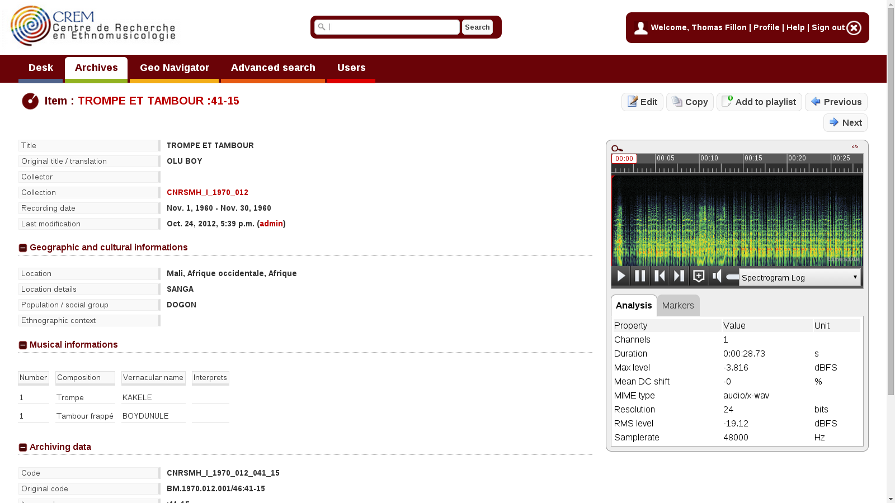
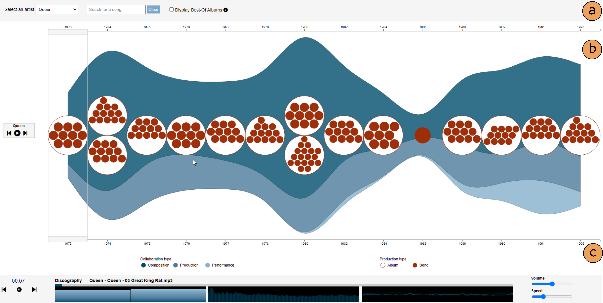

class: center, middle, ircam, inverse # TimeSide ## un framework, un web service et un player open source <br> d’analyse et d’annotation sonore <br> ### Guillaume Pellerin, WAM team, Dpt Innovation et Moyens de la Recherche, IRCAM, Paris #### Séminaire Archives Sonores et humanités numériques - 04/05/2023 - Corte, France <img src="https://www.ircam.fr/media/uploads/images/logo/logoircam_blanc.png" height="40px" /> <img src="https://github.com/Parisson/Telemeta-doc/blob/master/Common/img/parisson_logo_4_black_72_600px.png?raw=true" height="40px" /> <img src="https://upload.wikimedia.org/wikipedia/fr/thumb/8/8e/Centre_national_de_la_recherche_scientifique.svg/1200px-Centre_national_de_la_recherche_scientifique.svg.png" height="40px" /> <img src="https://www.sorbonne-universite.fr/sites/default/files/media/2019-10/logo_4.svg" height="40px" /> <img src="https://anr.fr/typo3conf/ext/anr_skin/Resources/Public/assets/img/anr-logo-2021.png" height="40px" /> <img src="https://www.culture.gouv.fr/var/culture/storage/images/_aliases/reference/7/3/0/4/3164037-1-fre-FR/LogoMCHP.PNG" height="40px" /> <!-- Paul Brossier, <br> Antoine Grandry, Martin Desrumaux, Guillaume Piccarreta --> --- class: ircam, large-list # Outline - Introduction - History - Core - Server - Player - Perspectives --- class: ircam, tight # TimeSide ## Context - **digization** > big data > platforms > algorithms > **listeners** - more **data sets**, databases, formats, algorithm versions, open DSP libraries & **communities** - difficulties to **port and scale some algorithms** on production platforms (DSP at scale) - **computer science** needs human data, **digital humanities** need computers - **collaborative workflows, citizen sciences** through the web - **temporal description** of sound and musical events .pull-left[ ## Constraints - sustainable digital archiving - reproducible research - copyrights, dissemination - open source, open standards, Web, format evolution and abstraction - continuous development, continuous integration - version everything, access everywhere ] .pull-right[ ### Use cases - MIR + archiving = MIRchiving - digitization and media packaging services - metadata enhanced streaming services - music data based applications - machine learning based applications ] --- class: ircam # TimeSide ## History - 2007 : [Telemeta](https://telemeta.org) developed for the sound archives of the CNRS / Musée de l'Homme - 2010 : TimeSide separation as a autonomous library and then a framework with a plugin oriented architecture - 2011 : Telemeta v1.0 released and https://archives.crem-cnrs.fr - 2013 : DIADEMS project (ANR) : external plugins - 2015 : TimeSide server and RESTFul API prototypes - 2015 : KAMoulox (ANR), DaCaRyh (Labex) projects - 2016 : WASABI (ANR), CREM-NYU-Parisson projects - 2019-2023 : Fully embed into IRCAM WAM innovation team --- class: ircam # Telemeta - CREM <center></center> .center[https://archives.crem-cnrs.fr] --- class: ircam # Telemeta - CREM <center></center> --- class: ircam, tight #Telemeta / TimeSide integration .pull-left[ ###Collaborative multimedia asset management system MIR + Musicology + Archiving = MIRchiving ### Ecosystem - 20 public partners - 15 historical developers (6000 commits) - 500 users (CREM) - and thousands of developers! (open source community) - mutualized development model ] .pull-right[ .right[] <br> https://github.com/Parisson/Telemeta ] --- class: center, middle, ircam, inverse # timeside.core --- class: ircam, tight #TimeSide ## Python audio processing framework and server made for the web https://github.com/Ircam-WAM/TimeSide ##Goals * **Process** audio fast and asynchronous with **Python**, * **Decode** audio frames from *any* audio or video media format into **Numpy arrays**, * **Analyze** audio content with some **state-of-the-art** audio feature extraction libraries like **Librosa, Aubio, Essentia, Yaafe, VAMP, IRCAM descriptors** and pure python processors * **Visualize** audio data with various fancy waveforms, spectrograms and other cool graphers, * **Transcode** audio data in various media formats and stream them through web apps, * **Serialize** feature analysis data through various portable formats (XML, JSON, HDF5) * **Playback** and **interact on demand** through a smart high-level **HTML5 extensible player**, * **Index**, **tag** and **annotate** audio archives with **cultural and semantic metadata**, * **Deploy** and **scale** your own audio processing engine flawlessly through any infrastructure with **Docker** --- class: ircam #TimeSide ##Python audio processing framework and server made for the web https://github.com/Ircam-WAM/TimeSide ## Use cases - Scaled audio processing (filtering, transcoding, machine learning, etc...) - Audio process prototyping - Audio dynamic visualization - Automatic segmentation and labelling synchronized with audio events - Collaborative annotation - Audio web services ## License: AGPL v2 --- class: ircam #timeside.core .pull-left-30[ ##API & architecture - streaming oriented core engine - data persistence ] .pull-right-70[ .right[] ] --- class: ircam .pull-left-30[ #timeside.core ##API & architecture - streaming oriented core engine - data persistence - processing API - plugin architecture - namespace ] .pull-right-70[ ```python class DummyAnalyzer(Analyzer): """A dummy analyzer returning random samples from audio frames""" implements(IAnalyzer) @interfacedoc def setup(self, channels=None, samplerate=None, blocksize=None, totalframes=None): super(DummyAnalyzer, self).setup(channels, samplerate, blocksize, totalframes) self.values = numpy.array([0]) @staticmethod @interfacedoc def id(): return "dummy" @staticmethod @interfacedoc def name(): return "Dummy analyzer" @staticmethod @interfacedoc def unit(): return "None" def process(self, frames, eod=False): size = frames.size if size: index = numpy.random.randint(0, size, 1) self.values = numpy.append(self.values, frames[index]) return frames, eod def post_process(self): result = self.new_result(data_mode='value', time_mode='global') result.data_object.value = self.values self.add_result(result) ``` ] --- class: ircam # timeside.core .pull-left-30[ ##API & architecture - streaming oriented core engine - data persistence - processing API - plugin architecture - namespace - ~500 unit tests - docker packaged (Linux, OSX, Windows) ] .pull-right-70[ ```python import timeside.core from timeside.core import get_processor from timeside.core.tools.test_samples import samples wavfile = samples['sweep.wav'] decoder = get_processor('file_decoder')(wavfile) grapher = get_processor('spectrogram')() analyzer = get_processor('level')() encoder = get_processor('vorbis_encoder')('sweep.ogg') pipe = (decoder | grapher | analyzer | encoder) pipe.run() grapher.render(output='spectrogram.png') print('Level:', analyzer.results) Level: {'level.max': AnalyzerResult(...), 'level.rms': AnalyzerResult(...)} ``` ```bash $ git clone --recursive https://github.com/Ircam-WAM/TimeSide.git $ docker-compose run app python3 manage.py shell $ docker-compose up ``` https://timeside.readthedocs.io/en/latest/index.html ] --- class: ircam # timeside.core ##Plugin examples .pull-left[ - FileDecoder, ArrayDecoder, LiveDecoder, AubioDecoder - VorbisEncoder, WavEncoder, Mp3Encoder, FlacEncoder, OpusEncoder, etc. - WaveformAnalyzer, SpectrogramAnalyzer - AubioTemporal, AubioPitch, etc. - Yaafe wrapper (graph oriented) - librosa (function oriented) - VampPyHost - Essentia bridge - ... ] .pull-right[ - Speech detection - Music detection - Singing voice detection - Monophony / Polyphony - Dissonance - Timbre Toolbox https://github.com/DIADEMS/timeside-diadems ] --- class: ircam # timeside.core ## Roadmaps ### 0.9 > 1.0 (2019-2021) * 674 commits, 7 contributors * Python 2.7 to 3.7 * Drop GStreamer for Aubio as default decoder and encoder * Regroup all dependencies on pip requirements, drop Conda * Add `Provider` object * Add Provider plugins `deezer-preview`, `deezer-complete` and `youtube` * Add loggers * Improve Docker packaging and image building --- class: ircam # timeside.core ## Roadmaps ### 1.0 > 1.1 (2021 - 2023) - Use the libav based aubio decoder by default (fastest audio to numpy array converter on the planet!) - Add a VAMP based Analyzer and a few plugins like `VampFlatness`, `VampCrest`, `VampTempo`, `VampTuning`, `VampSpectralCentroid`, `VampSpectralKurtosis` and `VampSpectralSlope` - Updated documentation https://timeside.ircam.fr/docs/ --- class: ircam, middle, center, inverse # timeside.server --- class: ircam, tight # timeside.server .pull-left[ ## RESTful API built on TimeSide 👉 https://timeside.ircam.fr/api/ ### Use cases - **Upload** audio tracks - **Retrieve** audio tracks from remote providers - **Stream** original or transcoded sources - **Run** on-demand analysis - **Customize** processors parameters - **Collect** track's annotation to build audio corpora - **Deliver** and share several types of results: - transcoded audio - serialized analysis as JSON or image - **Export/import** an audio analysis dataset ] .pull-right[ ] --- class: ircam, tight # timeside.server .pull-left[ ## RESTful API built on TimeSide 👉 https://timeside.ircam.fr/api/ ### Server design - Based on Django REST Framework (DRF) - **Interoperability** between other servers or frontends and TimeSide instance and its data - Object-relational **database** in order to store music tracks and processing results - **Models**: define essential fields and behaviors of stored data - **queue-worker architecture** enables to run tasks asynchronously ] .pull-right[ ] --- class: ircam, tight # timeside.server .pull-left[ ## RESTful API built on TimeSide 👉 https://timeside.ircam.fr/api/ ### What's new on server? - Add audio providers (Deezer, Youtube) - Switch from MySQL to PostgreSQL - Add a JWT authentication - Make the API follow the OpenAPI specification - Build a TypeScript SDK on the REST API - Add several tools, views, models and serializers - Improve server unit testing - Fix few bugs - Python, Django, DRF and Celery upgrades ] .pull-right[ ] --- class: ircam, tight # timeside.server .pull-left[ ## RESTful API built on TimeSide 👉 👉 https://timeside.ircam.fr/api/ ### Models - `Item`: audio content and metadata (external id) - `Provider`: provide audio from a given plateform - `Selection`: list of items (corpus) - `Processor`: plugins with version and default parameters - `Preset`: processor and a set of parameters - `Experience`: list of presets forming a pipe (reproductible) - `Task`: an experience and a selection - `Result`: transcoded audio or numerical outputs (hdf5 file) - `Annotation`: label audio file on a given time or segment ] .pull-right[ ] --- class: ircam #timeside.server ## RESTful API documentation auto-generated thanks to ReDoc on top of OpenAPI 👉 👉 https://timeside.ircam.fr/api/docs/ --- class: ircam # timeside.server - wasabi project .pull-left[ ## workflow examples in the WASABI platform ### with providers - Youtube - based on `youtube-dl` - must be adaptable to YouTube's changes - Deezer 30 seconds long preview - consuming Deezer's API - find another solution to full contents ] .pull-right[ <!-- .right[] --> ] --- class: ircam # timeside.server - wasabi project .pull-left[ ## workflow examples in the WASABI platform ### with server POC of a webservice - delivers audio analysis to another remote server - enhance its musical metadata with results ] .pull-right[ <!-- .right[] --> ] --- class: ircam # timeside.server - wasabi project .pull-left[ ## workflow examples in the WASABI platform ### Import/export of a run on Deezer's infrastructure POC of a sharing system of an audio analysis datasets - easy deployment thanks to docker - audio does not have to be shared ] .pull-right[ <!-- .right[] --> ] --- class: ircam # timeside.server - wasabi project .pull-left[ ## workflow examples in the WASABI platform ### with a frontend player POC of a JavaScript app that consume the Rest API - serialize data as JSON or image - deliver analysis track (spectrogram, waveform) - deliver or get annotations on audio track ] .pull-right[ <!-- .right[] --> ] --- class: ircam # timeside.server - wasabi project ([link](https://wasabi.i3s.unice.fr/)) .pic-container[ ] --- class: ircam # timeside.server - wasabi project ([link](https://wasabi.i3s.unice.fr/)) .pic-container[ ] --- class: ircam # timeside.server - wasabi project ([link](https://wasabi.i3s.unice.fr/)) <center>  </center> .footnote[ Aline Menin, Michel Buffa, Maroua Tikat, Benjamin Molinet, Guillaume Pellerin, Laurent Pottier, Franck Michel, & Marco Winckler. (2022, June 28). Incremental and multimodal visualization of discographies: exploring the WASABI music knowledge base. Web Audio Conference 2022 (WAC 2022), Cannes, France. https://doi.org/10.5281/zenodo.6767530 ] --- class: ircam, middle, center, inverse #timeside.player --- class: ircam # timeside.player - v1 ## Features .pull-left-30[ - full HTML through SoundManager2 - on demand processing and display - simple marker annotation - bitmap image cache only ] .pull-right-70[ .right[] ] --- class: ircam .pull-left[ # timeside.player - v2 ## Constraints - Handling multiple hours audio files - Multiple user annotations and analysis tracks - Vectorized - Zooming - Scaling ] .pull-right[ .right[] ] --- class: ircam, tight # timeside.player - v2 ## API SDK (client library) .pull-left[ - Timeside API: 75 routes - openapi-generator - Typescript - Fetch - OpenAPI v3 Schemas - Improve schema support on DRF (PR) - Components - Customize default names - Glue code - Authentication - Initialization on Browser / Node - Documentation ] .pull-right[ ```yaml /timeside/api/analysis/: get: operationId: listAnalysis parameters: [] responses: '200': content: application/json: schema: type: array items: $ref: '#/components/schemas/Analysis' ``` ] - SDK: https://github.com/Ircam-WAM/timeside-sdk-js - Scripts: https://github.com/Ircam-WAM/timeside-scripts Opportunity: `openapi-generator` also supports Python, C/C++, Ruby, Go, Rust etc... --- class: ircam, tight # timeside.player - v2 ## HTML Player .pull-left[ 🔧 Technologies - Vue (composition-api): DOM Manipulation, Data reactivity - D3 (SVG): Render waveform / Analysis - HTML5 Audio / Web Audio - Web Animations API - Websockets - Resize Observer - GitHub Action for continuous test & deployment (npm, gh-page) - https://github.com/Ircam-WAM/timeside-player ] .pull-right[ 🚀 Usage - Standalone app - Web library - React - Vue - HTML ] --- class: ircam, middle, center # Demo time! --- class: ircam, tight # timeside - embed player <br> <!-- <iframe src="https://ircam-wam.github.io/timeside-player/#/item/9e001ba0-6826-4f13-8679-21b1037c34e3" frameborder="0" style="width: 100%; height: 300px;"> </iframe> --> --- class: ircam, tight # timeside - music explorer (AI4Media project) .pull-left[ <img src="img/music-explorer-frontend-attributes.png" width="450"> ] .pull-right[ ] --- class: ircam, tight # TimeSide - roadmaps .pull-left[ ## 1.0 > 1.1 (2021) - composition - base image upgrades - core - lib upgrades - VampAnalyzer - graphers are back - server - upgrade deps - stabilization (worker) - API doc - worker - full asynchronous - better YouTube provider handling - player - embed design - better annotation editor - listing ] .pull-right[ ## 1.1 > 1.2 (2023) - core - parameters - switch to poetry (python package manager) - server - extended API - worker - websocket based monitoring - test Deezer provider at scale - player - uploader - better listing - looping ] --- class: ircam, tight #Perspectives ## Audio processing and annotation web service (SaaS) .pull-left[ ### TODO list - vertical scales - clustering and orchestration - synchronous task status polling - more plugins (VAMP host, source separation) - test some JS MIR librairies (Essentia.js) - easy upload - audio cross comparison functions - more embed experiences - re-use of archives in contemporary music ] .pull-right[ ### Dual licencing? - open source community release of the core framework (AGPL) - proprietary (entreprise) release with specific plugins ### New partnerships - IRCAM Amplify - BNF ? - +CNRS ? - LISA ? ] --- class: center, middle, ircam, inverse # Thank you and kudos to all contributors! <h2><a href="https//timeside.ircam.fr">timeside.ircam.fr</h2> #### guillaume.pellerin@ircam.fr / @yomguy <br> <img src="https://www.ircam.fr/media/uploads/images/logo/logoircam_blanc.png" height="40px" /> <img src="https://github.com/Parisson/Telemeta-doc/blob/master/Common/img/parisson_logo_4_black_72_600px.png?raw=true" height="40px" /> <img src="https://upload.wikimedia.org/wikipedia/fr/thumb/8/8e/Centre_national_de_la_recherche_scientifique.svg/1200px-Centre_national_de_la_recherche_scientifique.svg.png" height="40px" /> <img src="https://www.sorbonne-universite.fr/sites/default/files/media/2019-10/logo_4.svg" height="40px" /> <img src="https://anr.fr/typo3conf/ext/anr_skin/Resources/Public/assets/img/anr-logo-2021.png" height="40px" /> <img src="https://www.culture.gouv.fr/var/culture/storage/images/_aliases/reference/7/3/0/4/3164037-1-fre-FR/LogoMCHP.PNG" height="40px" />